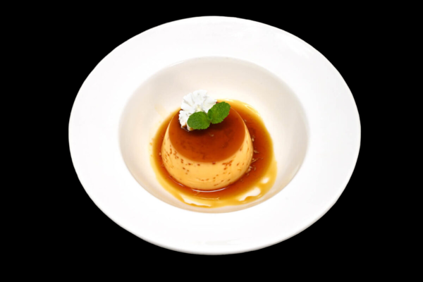
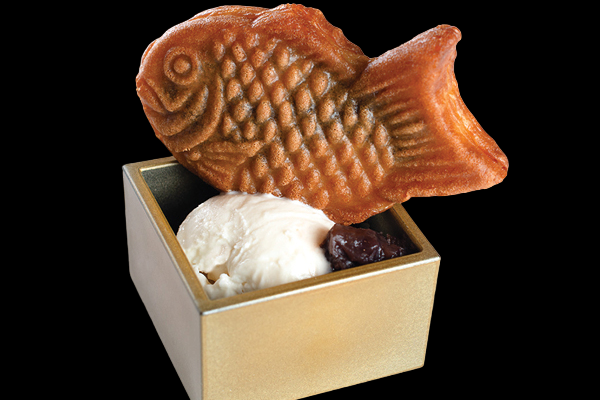

|

Pudding
Silky smooth custard akin to crème caramel. Flavored with vanilla, caramel, or matcha. Renowned for delicate sweetness and velvety consistency.
|
|

Taiyaki
Fish-shaped cake with sweet fillings like red bean paste, custard, chocolate, or sweet potato. Crispy outside, fluffy inside—a delightful dessert choice for restaurant menus.
|